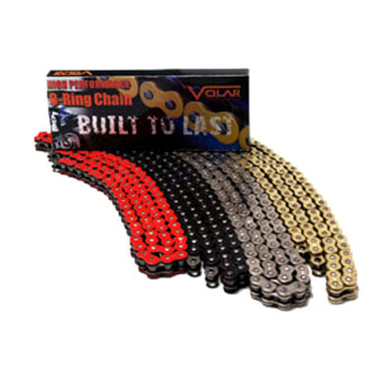

O-Ring chains are designed for high performance & safety riding experience. Sealed O-Ring chains are made with superior alloy steel. Adopted with heat-treatment to provide maximum performance with the tensile strength of 8500 LBS for 520 O-Ring chain and 9850 LBS for 525 & 530 O-Ring chain. Additionally, heat-treated rivet pins are press fitted and double broached to maximize chain resistance for pin rotation and chain elongation. Volar sealed O-Ring chains feature 2.2mm heavy duty alloy steel roller plates for 520 O-Ring chains and 2.4mm heavy duty alloy steel rollar plate for 525 & 530 O-Ring chains, which dramatically reduce friction, compromise on quality and durability with at least 50% longer service life.
